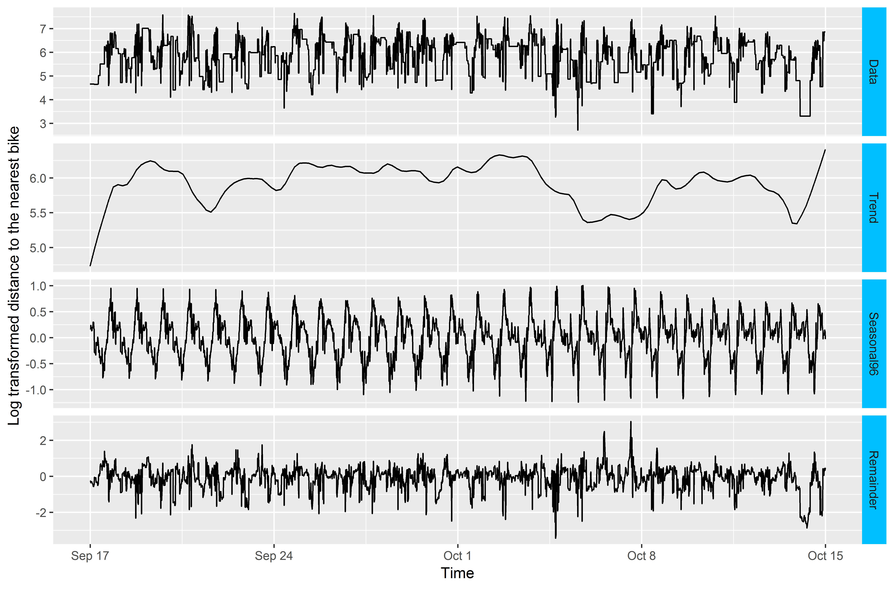

B Models
This appendix provides more detailed information about the models that were fitted to the non-seasonal historical data of each model point. This information includes parameter estimates, error variance, Gaussian log-likelihood, and information criteria such as AIC. For those model points where seasonality was detected, the decomposition plots are provided as well.
B.1 Bayview model point
Model
Series: x
ARIMA(3,1,1)
Box Cox transformation: lambda= 0
Coefficients:
ar1 ar2 ar3 ma1
-0.7636 -0.1269 -0.0724 0.6610
s.e. 0.2148 0.0320 0.0195 0.2148
sigma^2 estimated as 0.03032: log likelihood=886.22
AIC=-1762.45 AICc=-1762.42 BIC=-1732.96B.2 Downtown model point
Decomposition plot

Model
Series: x
ARIMA(3,1,2)
Coefficients:
ar1 ar2 ar3 ma1 ma2
-0.1423 0.5707 0.1873 -0.2605 -0.719
s.e. 0.3526 0.2258 0.0351 0.3600 0.352
sigma^2 estimated as 0.2219: log likelihood=-1788.92
AIC=3589.84 AICc=3589.87 BIC=3625.22B.3 Residential model point
Decomposition plot

Model
Series: x
ARIMA(1,1,1)
Coefficients:
ar1 ma1
0.6263 -0.9128
s.e. 0.0394 0.0257
sigma^2 estimated as 0.1714: log likelihood=-1442.62
AIC=2891.25 AICc=2891.26 BIC=2908.94B.4 Presidio model point
Decomposition plot

Model
Series: x
ARIMA(1,1,4)
Coefficients:
ar1 ma1 ma2 ma3 ma4
-0.6904 0.4389 -0.2201 -0.1439 -0.1430
s.e. 0.0781 0.0790 0.0275 0.0232 0.0192
sigma^2 estimated as 0.02021: log likelihood=1431.7
AIC=-2851.41 AICc=-2851.37 BIC=-2816.03